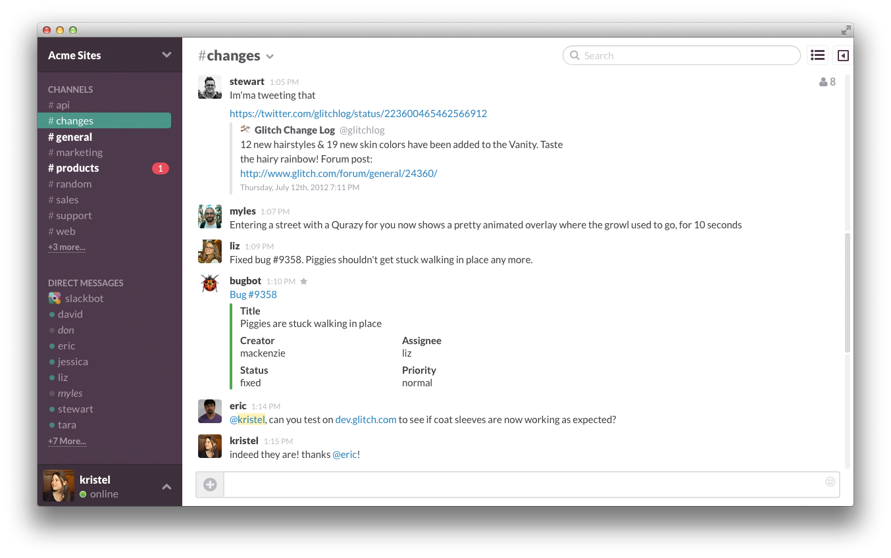

Food Truck Tracking in Slack
Providing Prescient Postings for Peckish Pythonistas
Problem
- Developers need food.
- Food comes from trucks.
- Trucks are poorly aggregated.
Solution?
- Food truck tracking sites!
Problem
- They suck.
- Many clicks, no deep linking.
- Devs spend a lot of time independently looking up foodtruck listings.
Slack
Slack
- Web-based messaging client.
- Similar to IRC w/channels.
- Collaborative features baked in.
- Extensible.
 +
+  = ?
= ?
Questions?
- HumanGeo - We're always looking for talented Python developers.